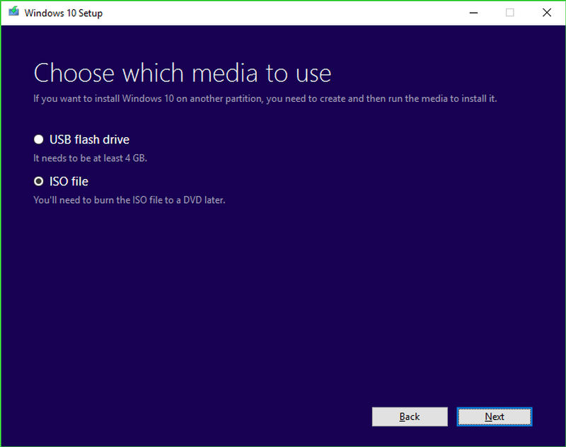
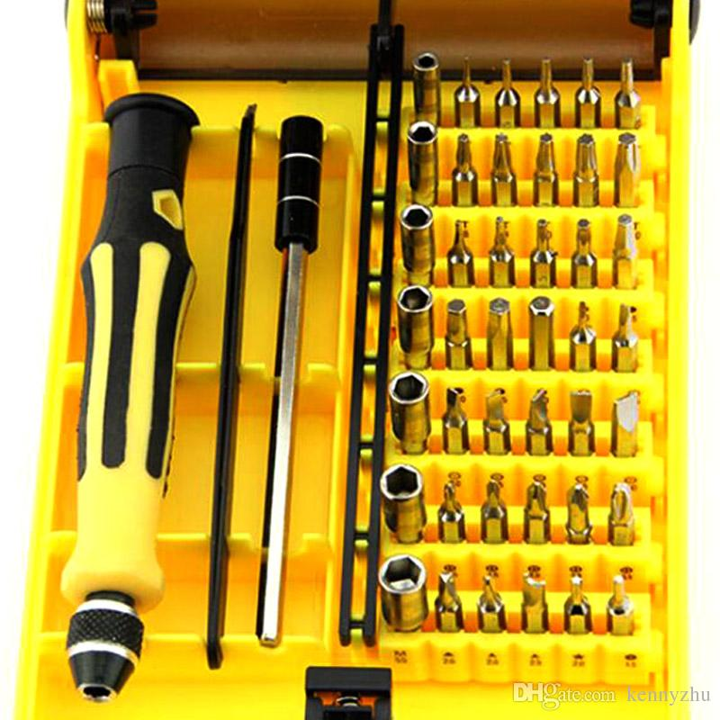
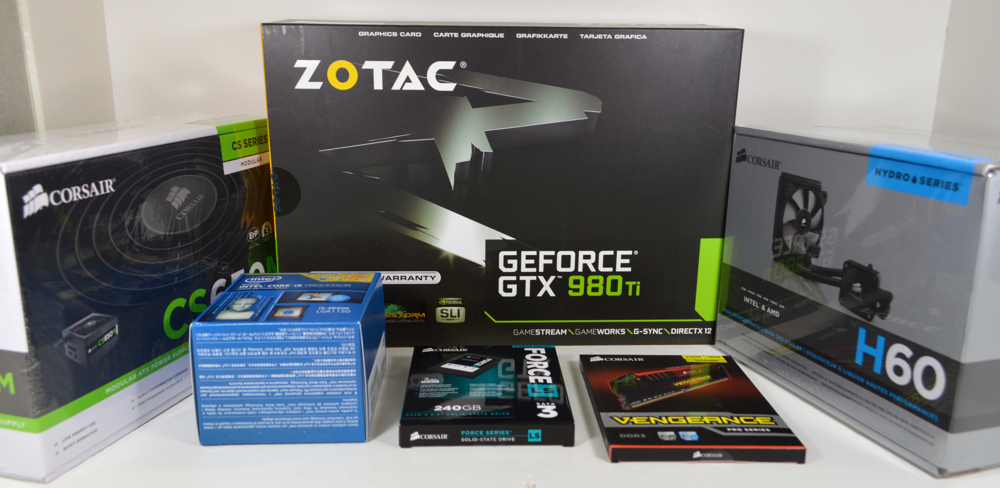

Voorbereiding
OS
Als eerste moet je een USB stick aanmaken met een installatie voor je besturingssysteem, of OS (Operating System). Dit kan je doen met elke OS, maar in deze tutorial nemen we alleen door hoe je dit bij Windows 10 doet, aangezien dit het makkelijkst is en het meest gebruikte systeem is. Als je alsnog een andere os wilt installeren, bijvoorbeeld OS X (apple) dan moet je even op Google zoeken: 'How to make OS X Bootable USB’. Maar dit is hoe het moet bij Windows. Zorg ervoor dat je een USB stick hebt die minimaal 8GB aan ruimte heeft, zorg er ook voor dat er niks belangrijks op staat, want wat er op staat zal worden verwijderd. Als je een stick hebt moet je de Windows Media Creation Tool installeren. Als het geïnstalleerd is, moet je het openen, en dan moet je de aangegeven stappen volgen, en als je het besturingssysteem hebt gekozen (Windows 10 is aangeraden), moet je de USB stick selecteren om daar op de software te installeren. Dit moet je gewoon laten gebeuren en als het klaar is is je stick klaar.
Tools
Als je een computer gaat bouwen zijn er een paar tools die je zeker nodig zal hebben; een kleine kruiskop schroevendraaier, een kleine platkop schroevendraaier, een ruime lege tafel en een antistatische armband, deze zorgt ervoor dat als je per ongeluk word statisch geladen door een tapijt of iets dergelijks, je niet de componenten kapot maakt.
Beginnen
Als je gaat beginnen moet je eerst alles binnen hebben, leg het even op een handige plek neer maar niet de plek waar je de pc zal bouwen, want deze ruimte heb je straks nodig. Zorg ervoor dat je niet op een tapijt op kleed werkt, want dan kan je makkelijk statisch geladen worden. Als alles hiervan klaar is kan je de doos van de voeding openmaken, in de doos vind je de voeding zelf, een stroomkabel, en als je een modulaire/semi-modulaire voeding hebt, zal je ook een paar kabels voor de componenten vinden. Doe een kant van de stroomkabel in de voeding en de andere kant in het stopcontact, maar doe de voeding niet aan. Maak je antistatische armband vast aan de voeding via de grill of hoe je het ook wilt. Zet vervolgens de voeding aan de kant, en pak je tools erbij, je kunt nu beginnen.
Dit was Stap 1 van Deel 2, je kunt nu doorgaan naar de volgende stap.